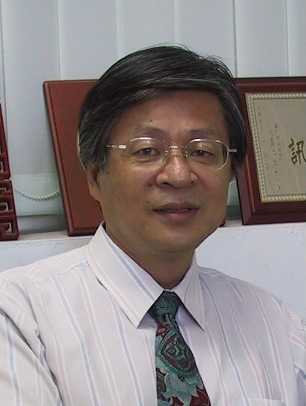
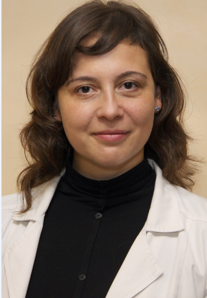

Confirmed Keynotes and Invited Talks
Keynotes:
Professor James Jhing-fa Wang

IEEE Fellow
President, Tajen University, Pingtung, Taiwan
Chair Professor, National Cheng Kung University, Tainan, Taiwan
Biography:
Prof. Jhing-Fa Wang is currently the President in Tajen University, Chair & Distinguished Professor in the Department of Electrical Engineering, National Cheng Kung University (NCKU). He got his bachelor and master degree from NCKU in Taiwan and Ph. D. from Stevens Institute of Technology USA in 1973, 1979 and 1983 respectively. He is the formal chair of IEEE Tainan Section in 2005-2009, the Coordinator of Section/Chapter, IEEE Region 10 in 2011-2012 & the Industry Liaison-Coordinater of IEEE Region 10 in 2009-2011. He was elected as IEEE Fellow in 1999 for his contribution on: "Hardware and Software Co-design on Speech Signal Processing", He was also the general Chair of ISCAS 2009.
He received Outstanding Research Awards and Outstanding Researcher Award from National Science Council in 1990, 1995, 1997, and 2006 respectively. He also received Outstanding Industrial Awards from ACER and Institute of Information Industry and the Outstanding Professor Award from Chinese Engineer Association, Taiwan in 1991 and 1996 respectively. He also received the culture service award from Ministry of Education, Taiwan in 2008, Distinguished Scholar Award of KT Li from NCKU in 2009, IEEE Tainan Section Best Service Award in 2011, Innovation Education Award in 2013 Seoul International Invention Fair & special award from 2017 Kuwait International Invention Fair.
Prof. Wang's research area is mainly on multimedia signal processing including speech signal processing, image processing, VLSI system design and AI robots. Concerning about the publication, he has published about one hundred & forty journal papers on IEEE, SIAM, IEICE, IEE and about three hundreds international conference papers since 1983. Prof. Wang recently has explored the research on Orange Technology. Orange Technology refers to a newly evolved interdisciplinary research area for integration and innovation of health, happiness, and care technologies. The objective of Orange Technology is to bring more health, happiness and warming care to the society.
Title: Orange Technology & AI Robot for Smart Hospital & Health Care
Abstract:
The first ever World Happiness Report has been published recently by the United Nations, it reflects a new worldwide demand for more attention to health and happiness as criteria for government policy. This also calls upon science and technology in both natural and social domains to be developed for promoting a happy and healthy lifestyle in our modern society.
To meet such a world trend, the Orange Technology research has been first proposed in National Cheng Kung University in Taiwan in 2008. The Orange Technology refers to a newly evolved interdisciplinary research area for integration and innovation of health, happiness, and care technologies. The research scope includes computer science, electrical engineering, biomedical engineering, psychological/physiological science, cognitive science, and social science. The representative color of Orange Technology originates from a harmonic fusion of red (representing brightness of health and happiness) and yellow (representing warming care). Instead of emphasizing the relations between environments and humans, as proposed by green technology, the objective of Orange Technology will explore the innovative technologies to bring more health, happiness, warming care, and more mental wellness to the society. Henear e will inevitably work closely with bots.
Concerning about the AI robot applied in smart hospital, if we take the necessary steps now to gain better understanding of how they work, then the transition could be easier and simpler. For this reason, some interesting examples of robots in healthcare are presented such as Da vinci surgical robot, blood-drawing robot, robotic assistance for a better life, tele medical network system, disinfectant Robots in Healthcare, and TUG hospital robot, etc.
In addition to health informatics, the Happiness Informatics Research is also newly proposed accompanying with Orange technology. It will first sense the happiness behavior of the human being to get the happiness signals such as EEG brain signals, smiling sound signals & smiling face images etc. Then the information technology such as pattern recognition technique will be applied to detect & measure the happiness degree of the behavior based on the input signals. Finally, the system will give the suitable positive feedback to improve the happiness degree of the user.
In summary, the outline of this talk is shown below:
1. Introduction to Orange Technology
2. AI Robots for Smart Hospital and Health Care
3. From health informatics to Happiness Informatics
4. Conclusion and Future works
Dr Nadezhda Zvartau

Senior Researcher in Hypertension Department;
Head of Biomedical Drug Research Department, Almazov National Medical Research Centre;
Senior Researcher in Translational Medicine Institute, ITMO University, Saint-Petersburg.
Biography:
Nadezhda E. Zvartau, MD, PhD is currently a Senior Researcher in Hypertension department and Head of Biomedical Drug Research Department, Almazov National Medical Research Centre; Senior Researcher in Translational Medicine Institute, ITMO University, Saint-Petersburg.
Dr. Nadezhda Zvartau received degrees: MD - at Saint-Petersburg Pavlov State Medical University (2002), cardiologist certificate (2004, 2009, 2014), PhD (Candidate of Medical Sci) - at Almazov National Medical Research Centre (2005), clinical pharmacologicst (2012 2016) at Pavlov State Medical University, Masters degree in management of medical organization (ongoing) at Peter the Great St.Petersburg Polytechnic University.
Nadezhda Zvartau works as a cardiologist at Almazov National Medical Research Centre and has been involved in international double degree master’s program “Computional biomedicine”. Since 2015 actively involved in the joint eHealth project with ITMO University, Saint-Petersburg as a medical specialist. The first results were recognized by Russian Science Foundation. The joint IT and medical team received a grant on “Value-oriented approach to predictive modeling of diagnosis and treatment of cardiovascular diseases based on Big Data analysis” for 2017-2019 years.
She has lectured on national and international meetings and published on the different topics, including telemonitoring and big data analysis in healthcare.
Title: Big data analysis and decision support systems in hypertension
Abstract:
Healthcare is characterized by high speed of digitalization with accumulation of real-world big medical data. Despite earlier predictions, application of big data technology in healthcare is still far from being our routine because of complex challenges.
The presentation provides a brief overall perspective why to deal with Big data analysis in health-care, emphasizing open questions: a gap between efficacy and effectiveness of treatments, limitations of clinical data, shifting paradigm to patient-centered and value-based approaches. Describes support at industry and governmental levels of eHealth technology development and invasion, opportunities and challenges of using available sources of Big healthcare data.
The second part of the presentation deals with 2 years’ experience of joint research project on applying IT technologies in medicine of IT specialists from ITMO University, Saint-Petersburg, Russia and medical specialists from Almazov National Medical Research Centre, Saint-Petersburg, Russia. Explains why hypertension is an attractive model for chronic disease modelling and presents first preliminary results on prediction and modelling of high-risk or high-cost patients and treatment results based on individual characteristics as well as trends over time.
Conclusions: despite numerous and complex challenges of application of Big data analysis in healthcare, it is well worth trying, because patients’ need, clinical and research opportunity remain significant.